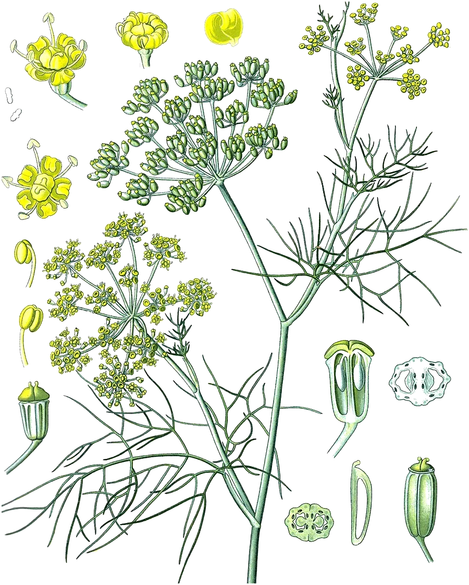

A six-membered ring carrying two double bonds side by side.
- Scent
- fresh, green, citrus-like, lightly peppery
- Found in
- dill, fennel, eucalyptus, black pepper, cinnamon leaf, parsley, star anise, elemi.
- In High Forest
- Sunshine Grounding Rest as a flavouring ingredient; amount not published
- Molar mass
- 136.23 g/mol
- Boiling point
- 175 °C JECFA
- CAS number
- 99-83-2
- FEMA number
- 2856
- Record
- PubChem 7460
- Systematic name
- 2-methyl-5-propan-2-ylcyclohexa-1,3-diene
What has been studied highest rung: animals
- ReviewA 2022 systematic review found twelve studies of the pure compound, in cells and animals, on pain, tumour cells and microbes. It points out that toxicology and human data are missing.19
- Not knownIts toxicology, which the review says is missing, and any effect in people.